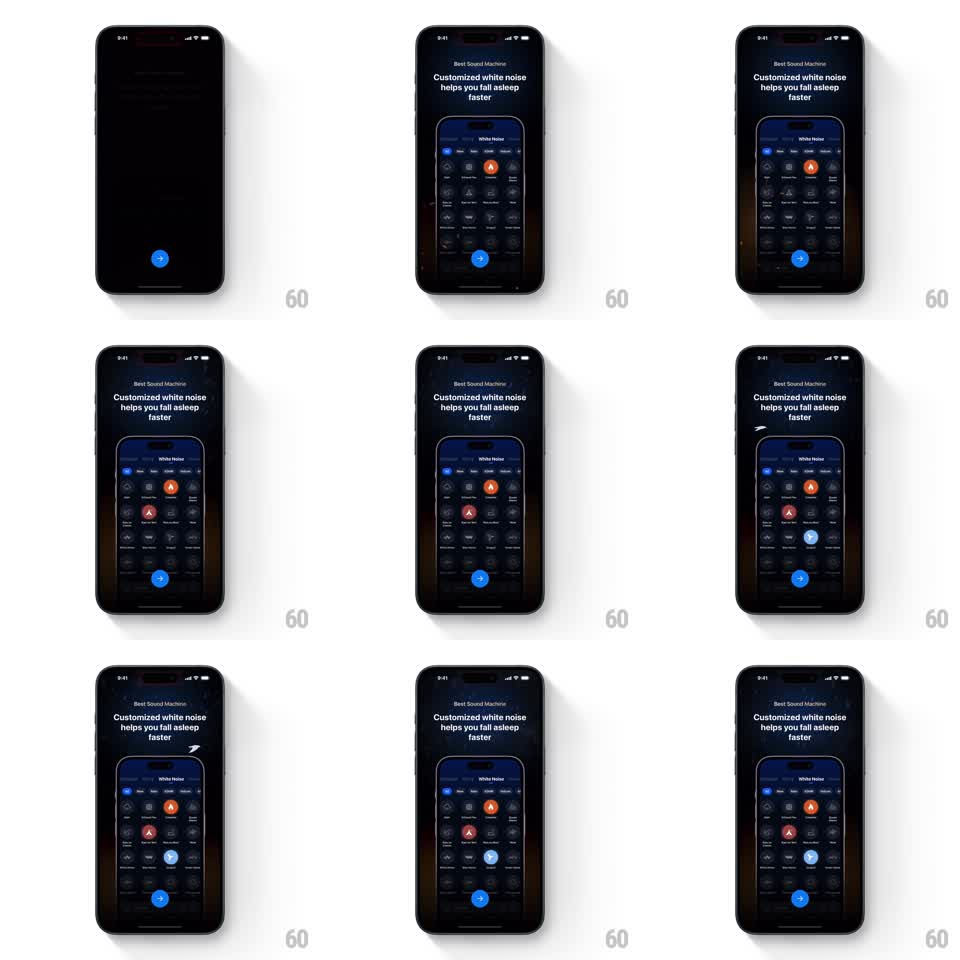

Media
Frame-by-frame

Rebuild this animation 1:1: ShutEye's white-noise mixer showcase - on the "Customized white noise helps you fall asleep faster" onboarding page, sound icons light up one by one inside the phone mockup, each casting its own colored glow.

Rebuild this animation 1:1: ShutEye's white-noise mixer showcase - on the "Customized white noise helps you fall asleep faster" onboarding page, sound icons light up one by one inside the phone mockup, each casting its own colored glow. ## Integration Integration: stack-agnostic spec - springs given as stiffness/damping, timed motions as duration + curve; map every value to your framework and animation library of choice. ## Scene A dark onboarding page with the headline "Customized white noise helps you fall asleep faster" above a phone mockup of the White Noise mixer: a grid of sound icons (rain, fire, wind, waves, and more) in circles. A blue arrow button sits below. ## Motion spec Pattern: staggered sound toggle showcase, ~4s. - The page rises and fades in (300ms); the mixer grid settles inside the mockup. - Sound icons activate one at a time, 600ms apart: each circle fills with its sound's color (fire orange, rain blue, wave teal, ember red) and a soft outer glow blooms around it (300ms per toggle). - The mockup's background glow shifts with each activation, tinting toward the newest sound's color (500ms crossfade). - Previously lit icons stay on - the mix builds up rather than soloing. ## Calibration - The pace is calm, one new sound every half-second-plus; this is a sleep app. - Glow colors must match the icon's sound identity, not a single accent. ## Reduced motion All active icons appear lit at once. ## Don't miss - Icons toggle in place - no layout shift in the grid. - The ambient glow around the mockup changes color with the mix, not just the icons.